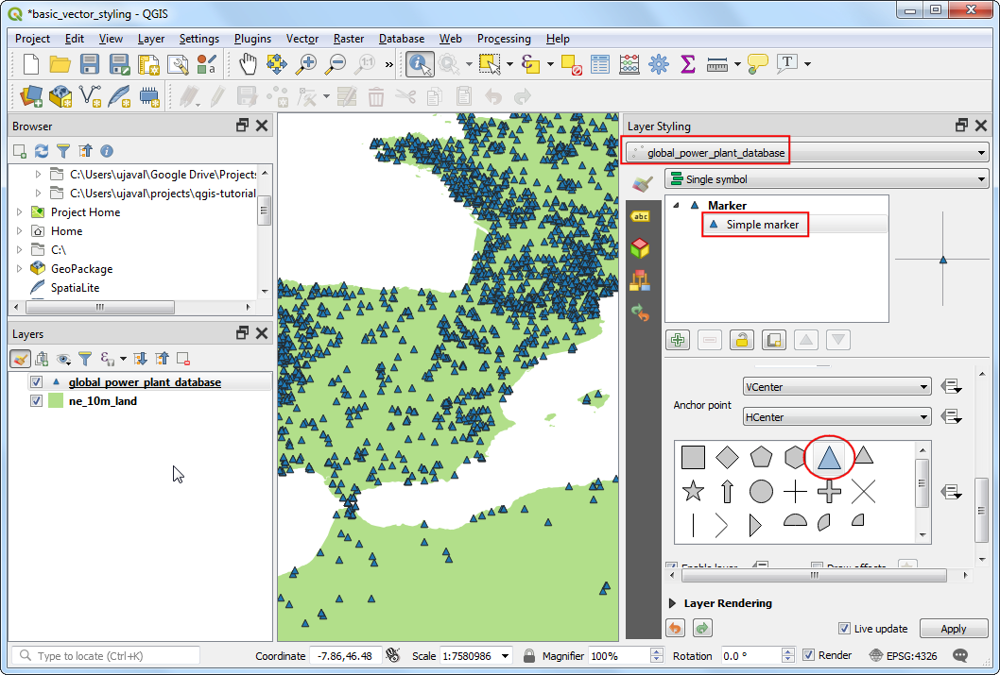
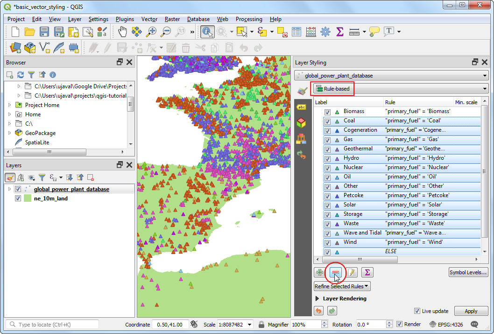

Ujaval Gandhi
Ujaval GandhiOsnovno oblikovanje vektorskih slojev (QGIS3)¶
Ko ustvarjamo karto, moramo podatke GIS predstaviti na kar se da vizualno privlačen način. QGIS za to ponuja številne možnosti, saj lahko podatke prikažemo z najrazličnejšo simbologijo. V tej vadnici bomo prebrali besedilno datoteko in uporabili različne tehnike prikaza za poudarjanje prostorskih vzorcev v podatkih.
Pregled naloge¶
Uporabili bomo tekstovno datoteko CSV, ki vsebuje podatke o vseh elektrarnah na svetu, in ustvarili prikaz porazdelitve obnovljivih in neobnovljivih virov goriva, ki se uporablja v teh elektrarnah.
Česa se bomo še naučili¶
Uporabe izrazov za združevanje (grupiranje) več atributnih vrednosti v eno kategorijo
Pridobivanje podatkov¶
„World Resources Institute <https://www.wri.org>“_ je sedel celovito odprtokodno bazo elektrarn po svetu, ki zajema več kot 30000 elektrarn. Prenesite »Global Power Plant Database <http://datasets.wri.org/dataset/globalpowerplantdatabase>__ z odprtega podatkovnega portala WRI.
Zbirka Natural Earth vsebuje več vektorskih podatkovnih slojev, ki pokrivajo celoten svet. Prenesite sloj 10m Physical Vectors - Land, ki vsebuje poligone na kopnem.
Kopijo podatkov lahko poberete tudi neposredno s spodnjega naslova:
globalpowerplantdatabasev120.zip
Vir podatkov [WRI] [NATURALEARTH]
Postopek¶
Razširite oba podatkovna sloja v mapo na vašem računalniku. V brskalniku QGIS (Browser Panel), poiščite mapo, v katero ste shranili podatke. Razširite mapo
ne_10m_landin izberite slojne_10m_land.shp. Prenesite sloj v glavno okno.

Na ploščo Layers bo dodana nova plast
ne_10m_land. Globalna zbirka podatkov o elektrarnah je na voljo v obliki datoteke CSV, zato jo bomo morali uvoziti. Kliknite gumb Open Data Source Manager (Upravitelj virov podatkov) v orodni vrstici Data Source Toolbar (Orodna vrstica virov podatkov). Uporabite lahko tudi Ctrl + L bližnjico na tipkovnici.

V oknu Data Source Manager preklipite na zavihek Delimited Text. Kliknite gumb … poleg File name in poiščite mapo, v katero ste razširili datoteko
globalpowerplantdatabasev120.zip. Izberiteglobal_power_plant_database.csv. QGIS bo poskusil samodejno zaznati ločilo in polja z geometrijo. Pustite Geometry CRS na privzeti vrednostiEPSG:4326 - WGS84. Kliknite Add in nato Close.

V nadzorni plošči Layers se bo pojavil nov sloj
global_power_plant_database, na zemljevidu se bodo pojavile točko z lokacijami elektrarn. Zdaj lahko oba sloja oblikujemo. Kliknite gumb Open the Layer Styling panel na vrhu plošče Layers.

Na desni strani se bo odprla nadzorna plošča Layer Styling. Najprej izberite sloj
ne_10m_land. To bo naš osnovni sloj, ki ga bomo oblikovali minimalistično, da ne bo oviral drugih slojev. KlikniteSimple fillin se premaknite navzdol. V Fill color, izberite barvo, ki vam je všeč. Kliknite padajoči meni poleg Stroke color in izberiteTransparent Stroke. Tako bodo obrisi poligonov kopnega prosojni. Sloje se bo takoj oblikoval glede na vaše izbire.

Nato izberite sloj
global_power_plant_database. KlikniteSimple markerin se premaknite navzdol. Za oznako izberite trikotnik.

Pomaknite se navzgor in v Fill color izberite barvo, ki vam je všeč. Dobra kartografska tehnika je izbira polnjenja z nekoliko temnejšo različice barve kot je v Stroke color. Bolj natančno kot z ročnim poskušanjem, lahko v QGISu določimo to možnost z izrazom Kliknite gumb Data defined override in izberite Edit.

Vnesite spodnji izraz, da bo barva 30 % temnejša kot barva polnila in kliknite OK.
darker(@symbol_color, 130)
Opomba
Upoštevajte, da je ta izraz neodvisen od barve polnila, ki ste jo izbrali. Videli boste, da je to izjemno koristno v naslednjih korakih, kjer samodejno nastavi barvo obrobe na podlagi barve polnila.
Opazili boste, da je gumb Data defined override poleg Stroke color obarvan rumeno, kar pomeni, da to lastnost nadzoruje preglasitev. En sam simbolni za prikaz sloja elektrarn ni preveč uporaben. Ne posreduje veliko informacij, razen lokacij elektrarn. Za bolj uporaben prikaz uporabimo drug način. Kliknite spustni seznam: Symbology in izberite način
Categorized.

Sloj
global_power_plant_databaseima atribut, ki podaja glavni vir goriva za vsako elektrarno. Ustvarimo lahko slog, v katerem je vsak posamezni vir goriva prikazan v svoji barvi. Izberite``primary_fuel`` v Column. Kliknite Classify. Pojavile se bodo kategorije/razredi in karta se bo ustrezno spremenila.

While a Categorized view is useful, this layer contains too-many categories for one to meaningfully interpret the map. A better approach would be to group certain type of fuel categories and reduce the number of classes. Let’s try to create 3 categories - Renewable fuel, Non-renewable fuel and Other. Select
Rule-basedrenderer. We want to delete all the categories except the top one. Select the second category from the top, hold the Shift key and click the bottom category. This will select all the categories except the top one. Once selected, click the Remove selected rules button to delete them.

Izberite preostalo pravilo in kliknite Edit current rule.

Vpišite
Obnovljivi virv polje Label. Kliknite gumb Expression poleg polja Filter.

V pogovornem oknu Expression String Builder vpišite naslednji izraz in kliknite OK. Z izrazom več virov obnovljive energije združimo v eno kategorijo.
"primary_fuel" IN ('Biomass', 'Geothermal', 'Hydro', 'Solar', 'Wind', 'Storage', 'Wave and Tidal')
Opomba
Kategorije obnovljivih in neobnovljivih virov energije vzamemo iz Wikipedije. Obstajajo tudi druge definicije, ki morda ne ustrezajo temu, kar smo izbrali tu.
Premaknite se niže in kliknite Simple marker. Izberite ustrezno barvo za polnilo Fill color. Ko zaključite, kliknite gumb Back.

Zdaj imate prvo pravilo za oblikovanje kategorije Renewable fuel v izbranem sloju. Desno kliknite vrstico in izberite Copy. Ponovno desno kliknite in izberite Paste.

Ustvarili boste kopijo obstoječega pravila. Izberite ustvarjeno pravilo in kliknite Edit current rule.

Vpišite
Neobnovljivi virkot oznako v Label. Kliknite Expression poleg polja Filter.

V pogovornem oknu Expression String Builder vpišite spodnji izraz in kliknite OK.
"primary_fuel" IN ('Coal', 'Gas', 'Nuclear', 'Oil', 'Petcoke')
Premaknite se niže in kliknite Simple marker. Izberite ustrezno barvo za polnilo Fill color. Ko zaključite, kliknite gumb Back.

Ponovite postopek kopiranja in lepljenja ter dodajte še tretje pravilo. Izberite ga in kliknite Edit current rule.
Kot oznako Label vpišite
Drugo. Izberite Else - Catch all for other features namesto Filter. S tem ustvarimo kategorijo za vse vrednosti, ki smo jih izpustili s prvima 2 praviloma. Premaknite se navzdol in kliknite Simple marker. Izberite primerno barvo v Fill color. Ko končate, kliknite gumb Back.

Prekategorizacija je zdaj končana. Dobili boste veliko preglednejši pogled, ki prikazuje porazdelitev obnovljivih virov in neobnovljivih virov goriva, ki jih uporabljajo elektrarne, ter njihovo distribucijo po državah. Vendar to ne daje popolne slike. Oblikovanju lahko dodamo še eno spremenljivko. Namesto da bi prikazali vse označevalnike z enakomerno velikostjo, lahko prikažemo velikosti, sorazmerne z zmogljivostjo proizvodnje energije v vsaki elektrarni. Ta kartografska tehnika se imenuje Multivariate mapping. Z desno tipko miške kliknite pravilo
Renewable fuelin izberite Change Size.

Kliknite gumb Data defined override poleg Size. Izberite Edit.

Ker se zmogljivost proizvodnje električne energije med našimi nabori podatkov zelo razlikuje, je učinkovit način za doseg majhnega obsega velikosti uporaba funkcije
log10. Lahko eksperimentirate z različnimi izrazi, da ugotovite, kaj najbolje ustreza želeni vizualizaciji. Vnesite naslednji izraz in kliknite OK.
log10("capacity_mw") + 1
Ponovite isti postopek za druga pravila.

Ko ste zadovoljni, lahko zaprete Layer Styling panel.

Če pogledamo končno vizualizacijo, lahko takoj vidimo vzorce v naboru podatkov. Na primer, v Evropi je več elektrarn, ki uporabljajo obnovljive vire energije, vendar so manj zmogljive kot elektrarne, ki uporabljajo neobnovljive vire energije.

If you want to give feedback or share your experience with this tutorial, please comment below. (requires GitHub account)